Inicio

Esta webapp permite llevar un control de tu progreso de los coleccionables en The legend of Zelda: Link's Awakening.
Está libre de spoilers grandes, diseñada para los que quieren obtener todos los coleccionables y completar el juego al 100%.
Piezas de corazón
Por todo el mapa hay esparcidas 12 piezas de corazón. Por cada cuatro piezas, conseguirás un corazón extra de energía.
-
1-K Tírate por el pozo
-
2-I Pesca el pez grande más cercano
-
5-E Usa la pluma para saltar a la plataforma central
-
3-G Métete por el tronco y usa el brazalete para levantar las calaveras
-
15-M Tírate por el hueco de arena central. Pon una bomba en la pared norte
-
9-H Tírate al agua en 12-D y nada hacia la izquierda hasta llegar al puente del castillo. Bucea a la izquierda del puente hasta encontrar el trozo
-
7-I Pon una bomba en la pared norte para abrir una cueva. Usa las botas de pegaso para romper los cristales. Pon una bomba en la pared noreste que suena diferente.
-
15-C Métete en la cueva y bucea hasta encontrar el trozo
-
14-M Pon una bomba en la grieta. Avanza hasta encontrar unos bloques agrietado, combina el arco y las bombas para destruirlos y avanza hasta encontrar el trozo
-
7-H Empuja la tumba de abajo a la derecha hacia delante. Baja las escaleras y en la pared sur pon una bomba en el bloque agrietado y usa el gancho para avanzar
-
8-A Corta los arbustos de la zona superior para encontrar unas escaleras. Pon una bomba en la pared sur.
-
1-A Busca la salida secreta de Turtle Rock que te lleva fuera.
Caracolas
Por todo el mapa hay repartidas 26 caracolas, aunque solo necesitas 20 para la recompensa en la Mansión Caracola en 11-I.
Hay 3 caracolas que solo se pueden conseguir en momentos concretos, pero no es crítico perderlas ya que sobran.
Nota: una vez entregadas 20, las que aún estaban pendientes en el mapa se convertirán en rupias.
-
4-K En un arbusto
-
2-H Levanta la roca con el brazalete y abre el cofre
-
2-K Entra en la casita pequeña y excava con la pala
-
4-N Cuando consigas las bombas, vuelve a la mazmorra y ve al norte, oeste y otra vez al norte y abre la grieta con bombas
-
5-H Corta el arbusto y excava con la pala en el mismo sitio
-
10-L Levanta la roca con el brazalete
-
6-K Excava con la pala en el hueco rodeado por plantas
-
12-I En un arbusto
-
7-N Empuja la caja dentro de la casa y ve por el camino de la izquierda
-
5-K Usa las botas de Pegaso contra el árbol
-
11-I Ve a la mansión de las caracolas teniendo exactamente 5 caracolas.
-
3-N Usa las botas de Pegaso contra el árbol
-
9-K Excava con la pala cerca de la estatua del búho
-
10-O Corta el arbusto
-
16-P Levanta los bloques con el brazalete
-
7-P Despues de haber llevado al fantasma a su tumba, levanta los jarrones de su casa con el brazalete
-
9-P Nada con las aletas y corta el arbusto
-
11-N Excava con la pala cerca de la estatua del búho
-
7-K Nada con las aletas y corta el arbusto
-
15-K Mueve uno de los armos para descubrir un subterráneo
-
11-I Ve a la mansión de las caracolas teniendo exactamente 10 caracolas.
-
13-G En una salida secreta de Face Shrine
-
13-A Levanta los bloques con el brazalete
-
14-B Entra en la cueva de la izquierda, pon una bomba en el hueco rodeado de agua arriba a la derecha
-
9-H Cuando vayas con el pájaro de la veleta, úsalo para volar por encima de los agujeros y meterte en el subterráneo.
-
15-A En Eagle's Tower déjate caer por un hueco de la izquierda en los pisos superiores
Equipo
Puedes aumentar la capacidad de polvo mágico, bombas y flechas. Hay tres salas ocultas en el mapa a las que puedes ir en cualquier orden para actualizar progresivamente tu equipo.
-
3-F Levanta los bloques con el brazalete. Introduce polvo mágico en el caldero.
-
10-P Baja las escaleras y nada hasta llegar a la sala de mejora. Introduce polvo mágico en el caldero.
-
5-A Levanta el bloque con el brazalete. Introduce polvo mágico en el caldero.
Fotografías
En la versión DX, cuando tengamos la pluma (y no vayamos acompañados) podremos entrar en la tienda del fotógrafo en 8-D. Al hablar con él nos hará la primera foto y a partir de ahora podremos completar la colección del álbum que se compone de 12 fotos.
Hay cinco fotos que solo pueden obtenerse en momentos concretos (si te las saltas, no podrás tenerlas en tu partida).
-
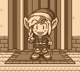
Habla con el fotógrafo por primera vez en 8-D
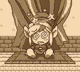
Foto alternativa Única oportunidad
Para obtener una foto alternativa (que sustituye la normal), contéstale NO a todo lo que te pregunte. -
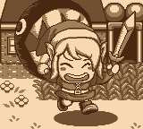
Acércate al poste de Bow-wow en 2-K -
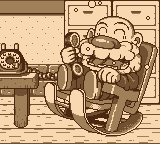
Acércate a la ventana de la casa de Ulrira en 2-L -
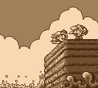
Cuando vayas con Marin, ve al acantilado de 1-P -
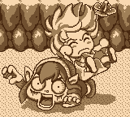
Cuando vayas con Marin, tírate por el agujero de 1-K -
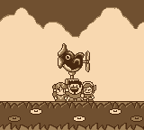
Cuando vayas con Marin, acércate a la veleta de 3-J -
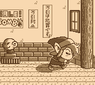
Roba un objeto en la tienda en 4-J
Nota: perderás una vida si vuelves a la tienda y a partir de entonces los personajes te llamarán Thief (ladrón). Por ello, es mejor dejar esta foto para el final, y conseguirla tras hacer copia de la partida. -
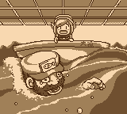
Despues de conseguir la lupa habla con el pescador en 11-O -
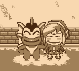
Despues de conseguir la lupa entra en la casa de Zora en 14-M -
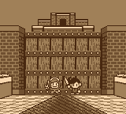
Antes de abrir la puerta levadiza del castillo Kanalet, acércate a 10-H -
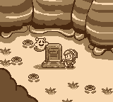
Despues de ayudar al fantasma, vuelve a su tumba en 5-G -
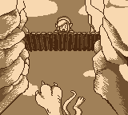
Camina por el puente en 14-A